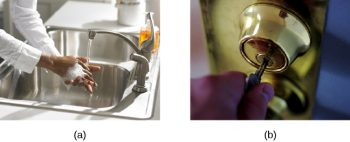
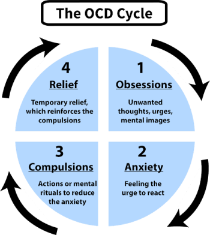
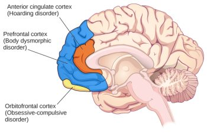

12.5: Obsessive-Compulsive and Related Disorders
Obsessive-compulsive and related disorders are a group of overlapping disorders that generally involve intrusive, unpleasant thoughts or repetitive behaviors. Many of us experience unwanted thoughts from time to time (e.g., craving double cheeseburgers when dieting), and many of us engage in repetitive behaviors on occasion (e.g., pacing when nervous). However, obsessive-compulsive and related disorders are characterized by intrusive thoughts and repetitive behaviors that are so intense they significantly disrupt daily life. Included in this category are obsessive-compulsive disorder (OCD), body dysmorphic disorder, and hoarding disorder.[1]
OCD involves time-consuming (>1 hour daily) obsessions, compulsions, or both, unrelated to substance use, a medical condition, or another mental disorder (APA, 2013). Obsessions are more severe than fleeting unwanted thoughts or routine worries. Obsessions are persistent, unintentional, and unwanted thoughts and urges that are highly intrusive, unpleasant, and distressing (APA, 2013). Common obsessions include concerns about germs and contamination, doubts (“Did I turn the water off?”), order and symmetry (“I need all the spoons in the tray to be arranged a certain way”), and aggressive or lustful urges. The individual typically recognizes that these thoughts and urges are irrational and attempts to suppress or ignore them, but finds it extremely difficult to do so. Obsessive symptoms can overlap, such as combined contamination and aggressive obsessions (Abramowitz & Siqueland, 2013).

Compulsions are repetitive and ritualistic acts performed mainly to reduce distress caused by obsessions or prevent feared events (APA, 2013). Compulsions often include such behaviors as extensive hand washing, cleaning, checking (e.g., that a door is locked), and ordering (e.g., lining up all the pencils in a particular way), and they also include such mental acts as counting or reciting something to oneself (Figure 6). Compulsions in OCD aren’t pleasurable or realistically connected to the source of distress or feared event. A cycle of obsessive thoughts, anxiety, compulsions, and temporary relief deeply affects individuals with OCD (Figure 7). Approximately 2.3% of the U.S. population will experience OCD in their lifetime (Ruscio et al., 2010) and, if left untreated, OCD tends to be a chronic condition creating lifelong interpersonal and psychological problems (Norberg et al., 2008).[2]

Body Dysmorphic Disorder. Similar to OCD, body dysmorphic disorder involves an obsession with a perceived flaw in physical appearance that is nonexistent or barely noticeable to other people (APA, 2013). Individuals believe they are unattractive or deformed, and typically focus on skin, face, or hair. This preoccupation with imagined physical flaws leads to repetitive behaviors and thoughts like excessive mirror-checking, hiding the perceived flaw, comparing with others, and sometimes seeking cosmetic surgery (Phillips, 2005). About 2.4% of U.S. adults meet the criteria for body dysmorphic disorder, with slightly higher rates in women than in men (APA, 2013).[3]
Hoarding Disorder. Once considered a symptom of OCD, hoarding is now recognized as a distinct disorder (Mataix-Cols et al., 2010). People with hoarding disorder compulsively keep possessions, regardless of value, cluttering living spaces to dysfunctional levels. Excessive clutter often prevents people from using their kitchen or sleeping in their bed. People with this disorder struggle to discard items, believing the items might be useful later or due to sentimental attachment (APA, 2013). A diagnosis of hoarding disorder requires that hoarding isn’t caused by another medical condition or disorder (e.g., schizophrenia). (APA, 2013).[4]
Neural and Genetic Mechanisms Underlying Obsessive-Compulsive and Related Disorders
Genetics. The results of family and twin studies suggest that OCD has a moderate genetic component. The disorder is five times more frequent in first-degree relatives of people with OCD (Nestadt et al., 2000). Additionally, the concordance rate of OCD is 57% for identical twins and 22% for fraternal twins (Bolton et al., 2007). Studies have implicated about two dozen potential genes involved in OCD; these genes regulate the function of three neurotransmitters: serotonin, dopamine, and glutamate (Pauls, 2010).
Brain regions involved in OCD. A key brain region implicated in OCD is the orbitofrontal cortex (Kopell & Greenberg, 2008) (Figure 8). In individuals with OCD, the orbitofrontal cortex becomes hyperactive when exposed to triggering stimuli, such as images of unclean toilets or asymmetrically hung pictures (Simon et al., 2010). The orbitofrontal cortex is a region in the “OCD circuit” that, collectively, influences the perceived emotional value of stimuli and the selection of behavioral and cognitive responses (Graybiel & Rauch, 2000). As with the orbitofrontal cortex, other regions of the OCD circuit (e.g., dorsolateral prefrontal cortex, precuneus, and left superior temporal gyrus) show heightened activity during symptom provocation (Rotge et al., 2008). These findings suggest that abnormalities in these regions may contribute to OCD symptoms (Saxena et al., 2001). Consistent with this network explanation, people with OCD show substantially higher connectivity of the orbitofrontal cortex with other regions of the OCD circuit (Beucke et al., 2013).

Neuroimaging studies have also highlighted the role of the prefrontal cortex in OCD and body dysmorphic disorder. Individuals with body dysmorphic disorder often abnormally perceive body areas. An fMRI study showed that when people with body dysmorphia viewed faces, they had abnormal prefrontal cortex activity, which may be associated with the perceptual distortions seen in body dysmorphic disorder (Feusner et al., 2007).
These neuroimaging findings highlight the importance of brain dysfunction in OCD and body dysmorphic disorder. However, neuroimaging approaches are limited by their inability to explain differences in obsessions and compulsions, and correlations between brain abnormalities and OCD symptoms are not evidence of causality (Abramowitz & Siqueland, 2013).
Treatments of OCD
Several approaches are commonly used to treat OCD. One effective treatment is a form of Cognitive Behavioral Therapy called exposure and response prevention. In therapy sessions, individuals with OCD are gradually exposed to situations or objects designed to mildly provoke their obsessions in a safe environment. They are instructed to avoid their compulsive responses. Eventually, the high anxiety situations become less anxiety-provoking and more manageable. Exposure and response is also very effective with panic disorder (which is an anxiety disorder). Cognitive Behavioral Therapy is often used in conjunction with pharmacological treatments for OCD. Selective serotonin reuptake inhibitors (SSRIs) are used to treat OCD, but often at higher doses than are used to treat depression. Finally, OCD can be treated effectively with brain stimulation, including both non-invasive techniques like transcranial magnetic stimulation that uses magnetic pulses to stimulate the prefrontal cortex (Trevizol et al., 2016), and invasive techniques like deep brain stimulation that requires surgically implanting a device deep in the brain that can modulate activity in the OCD brain circuit (Alonso et al., 2015).[5]
Media Attributions
- hand washing and door check © OpenStax is licensed under a CC BY-NC-SA (Attribution NonCommercial ShareAlike) license
- The OCD Cycle © Michael Hove is licensed under a CC BY-NC-SA (Attribution NonCommercial ShareAlike) license
- Brain regions © OpenStax is licensed under a CC BY-NC-SA (Attribution NonCommercial ShareAlike) license

- This section contains material adapted from: Spielman, R. M., Jenkins, W. J., & Lovett, M. D. (2020). 15.5 Obsessive-Compulsive and Related Disorders. In Psychology 2e. OpenStax. Access for free at https://openstax.org/books/psychology-2e/pages/15-5-obsessive-compulsive-and-related-disorders License: CC BY 4.0 DEED. ↵
- This section contains material adapted from: Spielman, R. M., Jenkins, W. J., & Lovett, M. D. (2020). 15.5 Obsessive-Compulsive and Related Disorders. In Psychology 2e. OpenStax. Access for free at https://openstax.org/books/psychology-2e/pages/15-5-obsessive-compulsive-and-related-disorders License: CC BY 4.0 DEED. ↵
- This section contains material adapted from: Spielman, R. M., Jenkins, W. J., & Lovett, M. D. (2020). 15.5 Obsessive-Compulsive and Related Disorders. In Psychology 2e. OpenStax. Access for free at https://openstax.org/books/psychology-2e/pages/15-5-obsessive-compulsive-and-related-disorders License: CC BY 4.0 DEED. ↵
- This section contains material adapted from: Spielman, R. M., Jenkins, W. J., & Lovett, M. D. (2020). 15.5 Obsessive-Compulsive and Related Disorders. In Psychology 2e. OpenStax. Access for free at https://openstax.org/books/psychology-2e/pages/15-5-obsessive-compulsive-and-related-disorders License: CC BY 4.0 DEED. ↵
- This section contains material adapted from: Spielman, R. M., Jenkins, W. J., & Lovett, M. D. (2020). 15.5 Obsessive-Compulsive and Related Disorders. In Psychology 2e. OpenStax. Access for free at https://openstax.org/books/psychology-2e/pages/15-5-obsessive-compulsive-and-related-disorders License: CC BY 4.0 DEED. ↵
A group of disorders that center on a cycle of intrusive thoughts, feelings of anxiety, repetitive behaviors, and short-term reliefs.
A class of psychological disorders; characterized by mania as the defining feature
A type of obsessive-compulsive disorder. Characterized by persistent difficulty in parting with possessions due to a perceived need to save the items